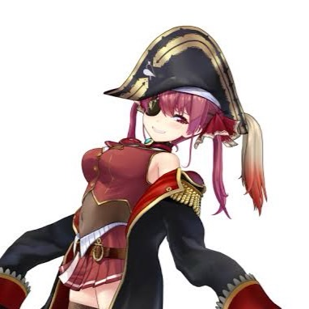
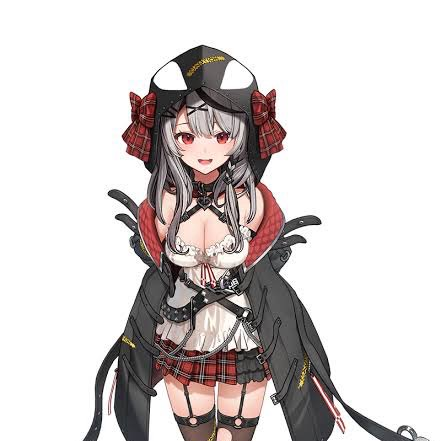

どうもこんにちは！
このサイトでは、私の人生を豊かにしてくれる様々な趣味や
その魅力などについて話したいと思います！
是非ご一読ください！！
目次
- 好みのゲーム
- 推しの紹介
- その他
好みのゲーム
テトリス
ゲームをする人で知らない人はいない超有名作品！
画面上から落ちてくるブロック「テトリミノ」を横一列に配置することで消していくというシンプルな設定ながら、その奥は実に深く、なんとリリースから40年以上経過しています！
最近では、「テトリス99」や「ぷよぷよテトリス」などの
アレンジルールも高い人気を誇っています。
私は普段「ぷよぷよテトリス2」をプレイしており、一人で技術の向上を試みたり、
ネット上の強者と対戦したり、友人とわいわい対戦したりしております。
このサイトを閲覧していただいているそこのあなたも、機会があれば是非
対戦いたしましょう。
スプラトゥーン
2015年に第一作「スプラトゥーン」が発売され、現在では第三作である「スプラトゥーン3」が最新作となっています。
バトルの基本は4対4のチーム戦。3分間地面にインクを塗りあって、最終的に塗った面積（ナワバリ）をたくさん確保したチームが勝ちとなるナワバリバトルの他、4つの異なるルールが存在し、友達4人でチームを結成すれば、深夜にプレイすると騒音被害が出るほど盛り上がることができます！笑
私は「スプラトゥーン2」から始め、「スプラトゥーン3」までプレイしています。
友人から誘われた時以外に起動することはあまりありませんが、一度プレイし始めると
かなり長い時間遊んでしまい、夜にプレイし始めると必ず朝を迎えてしまいます笑
カービィ
大きな口で何でも吸い込んでしまう、食いしん坊な「カービィ」が主人公の横スクロールアクションゲーム。
プププランドの平和を守るため、舞台で冒険を繰り広げます。敵を吸い込んで攻撃、空を飛んだり、敵の能力をコピーして変身したり。
私が初めてプレイしたのは、2011年発売の「星のカービィ Wii」であり、それ以降のタイトルもほとんど遊んでいます。
僕がカービィにおいて特に好きな点は、各シリーズ毎に特別な能力が存在することです。
「星のカービィ Wii」では「ウルトラソード」、「星のカービィ トリプルデラックス」では「ビッグバンすいこみ」などがあり、これらの能力は地形すらも破壊したり、ボスを一撃で倒せたりするので、たまらない爽快感を感じることが出来ます。
ドラゴンクエスト
「ドラゴンクエスト」シリーズは、プレイヤー自身が主人公となり、世界を脅かす魔王を倒すために壮大な冒険物語を紐解いていくという、日本を代表するロールプレイングゲーム（RPG）です。
現在では、シリーズは「Ⅰ～Ⅺ」まで発売されており、その他にも、モンスターの育成・対戦要素に特化した「ドラゴンクエストモンスターズ」シリーズ、リアルな表現でキャラクター達を自在に操るアクションRPGである「ドラゴンクエストヒーローズ」シリーズなど、80を超えるタイトルが発売され、全世界でシリーズ累計8800万本以上の出荷・ダウンロード販売を達成しています。
最近では、「Ⅰ～Ⅲ」のリメイクも発売されており、私はもちろんすべてプレイするつもりです！
その他
上記の他にもたくさんのゲームをプレイしています！
特に、友人とゲームで遊ぶ際には、マリカー、スマブラ、遊び大全、、、
パーティゲームを挙げるとキリがないですね！笑
とにかく言えることは「ゲーム最高！！」ってことです！！
推しの紹介
宝鍾マリン

宝石、宝、お金が大好きで、海賊になって宝を探すのが夢。海賊船を買うのが目標で今は陸でVTuberをしている。
（ようするには今はただの海賊コスプレ女）
お姉さん風にふるまい、小悪魔的に誘惑したりからかったりしてくる。
小悪魔的エロティックな魅力を持つ色気のある女上司。しかも若い！（大体17歳）
海賊の衣装は実はコスプレだが、コスプレイヤーだと思うとそれはそれでエ◯チ。
はい、私がホロライブを知るきっかけとなった我らが海賊団の船長ですね。声、ビジュアルはもちろんのこと、歌やトークも大好きです！！
2024年の12/7,12/8には横浜Kアリーナにて1stソロライブを行い、私も両日参加させていただきました！人生で一番楽しい二日間となりました！！！！
兎田ぺこら
寂しがり屋なうさ耳の女の子。にんじんをこよなく愛し、いつでも食べられるように持ち歩いている。
はい～、こちらは屈指の配信狂であるぺこらちゃんですね。マリン船長を追っていれば当然高頻度で出会うことになります。ビジュアルや声が好きなのは紹介する人たち全員なのでもう端折っちゃいましょう。
ぺこちゃんの特徴としてはやはりその配信頻度の高さや、そのどれもが爆笑級の面白さであることです！！船長は持ち前のセンシティブさから、人にお勧めするには少しためらってしまいますが、ぺこちゃんなら自信を持って布教することができますね（笑）！！
湊あくあ
マリンメイド服のバーチャルメイド。本人は頑張っているがおっちょこちょいでドジっ子。
言わずと知れたスーパーアイドル！！
残念ながら私がこの界隈に出会ったのはあくたんが卒業した直後か直前くらいだったのでほとんどリアルタイムの活動を観ることは出来ませんでした。
、、、しかし！流石はあくたん！！アーカイブや数多の切り抜きによって瞬く間にあくたんの虜になってしまいました（笑）
卒業はしてしまいましたが、きっと今でも元気にしていることでしょう。あなたが元気ならそれでいいんです、さk...じゃなくてあくたん。
百鬼あやめ
魔界学校所属の和装鬼娘。いたずら好きで、よく鬼火を飛ばして他人をからかって遊んでいる。こう見えて実は生徒会長。
我らがお嬢！お嬢の可愛いところといえばやはりゲラなところでしょうか、、、
笑ってる姿がほんとに可愛すぎる(⋈◍＞◡＜◍)。✧♡
配信頻度はあまり高くありませんが、稀にある配信で十分な'ナキリウム'を接種できるほど、一度の配信でたくさんのお嬢の「可愛い」を味わえます！
ちなみに私が完全にお嬢に落ちたのは「リズム天国の耐久配信」です！！
沙花又クロエ

【秘密結社holoX】の掃除屋でholoXのインターン生。
冷静沈着で淡々と組織からの依頼をこなす。音楽が好きで、よく音楽を聴いている。
本人は否定しているが、ツンデレに見られるらしい。
2024/1/26。卒業してしまいましたね、、、
しょうがないとは言え、やはり悲しいものは悲しいです。
卒業ライブでは号泣でした。
ですが、今回の卒業の形態はあくたんとは異なり、「配信活動終了」というものなので、今後holoxのライブなどに出演する可能性もありますね。ていうか出演してほしい！
水宮枢
 FLOW GLOWの宣伝担当。
愛されと褒められを求め、もぐもぐしながら日々SNSで発信中。
もっと世界は優しくあってよって思ってたら、仲間たちに出会えたので捨てたもんじゃないよね。
ありがと神様、この調子で身長ももうちょっと伸ばしてください。
FLOW GLOWの宣伝担当。
愛されと褒められを求め、もぐもぐしながら日々SNSで発信中。
もっと世界は優しくあってよって思ってたら、仲間たちに出会えたので捨てたもんじゃないよね。
ありがと神様、この調子で身長ももうちょっと伸ばしてください。
この世界を知ってから1年も経っていないので、唯一デビューから推しているホロメンです。
「初配信」というワードにわくわくして、FLOW GLOWは一通りみましたが、枢ちゃんが一番好きでしたね～。
深夜に配信していることも多く、夜行性の私でもリアタイできるのも嬉しいです！
その他
さて、今回は6人のみ紹介しましたが、正直他にも推し、準推しはたくさんいます。
一度知るとほとんどの人を好きになってしまうので、今推してない人についても、まだその人のことを知らないだけだったりします。
船長から始まった私の推し活は、人生を本当に豊かにしてくれています。
永遠に続くわけではないこの時間を大切にし、「推しは推せるときに推せ」の精神で今後も推し活を楽しんでいきたいと思います！
あとがき
最後に
今回、このサイトを作成したのは、自分の趣味の紹介という形で、楽しみながらWebサイト制作の実践経験を積みたかったからです。
なので、内容についてはあまり凝っていません。そんな適当な内容だったにもかかわらず最後まで読んで下さったあなたには深く感謝しています。
今後もたくさんの経験を積み、閲覧者の方々を楽しませることができるようなページを作ることができるよう、より一層精進していこうと思います。
では、またお会いしましょう。ありがとうございました。
詳細情報及び宣伝
最終更新日時：2025/04/29
作成者：今はまだ内緒
あじゃぶ公式LINEスタンプ高評発売中！